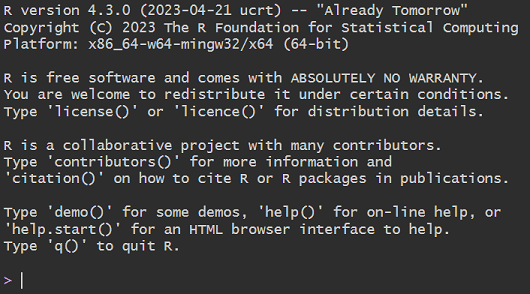
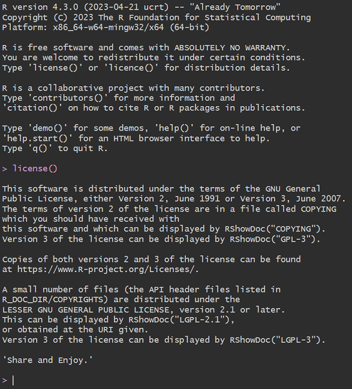
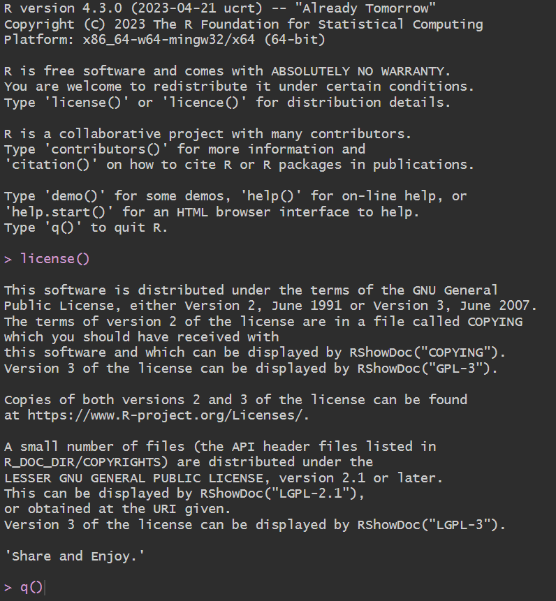
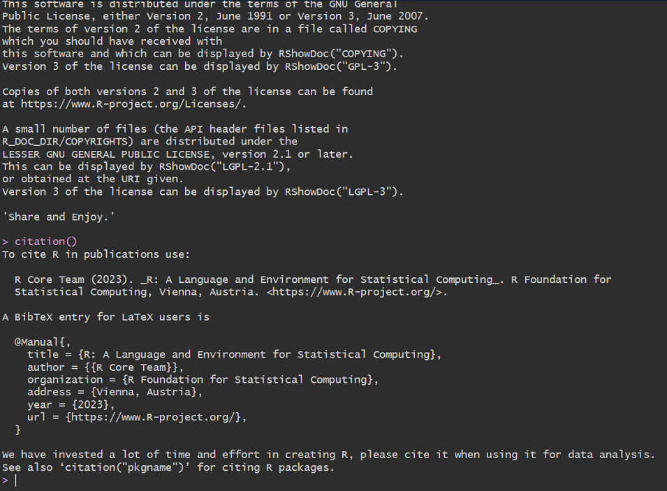
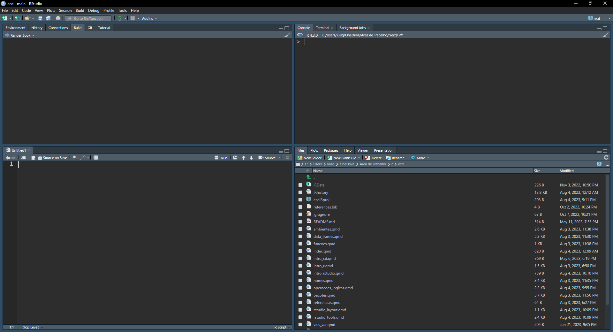
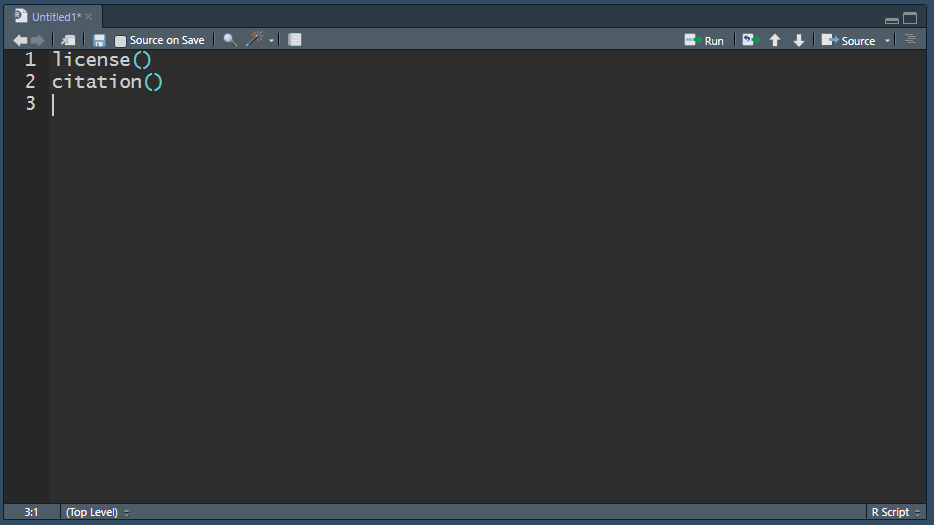
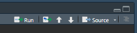
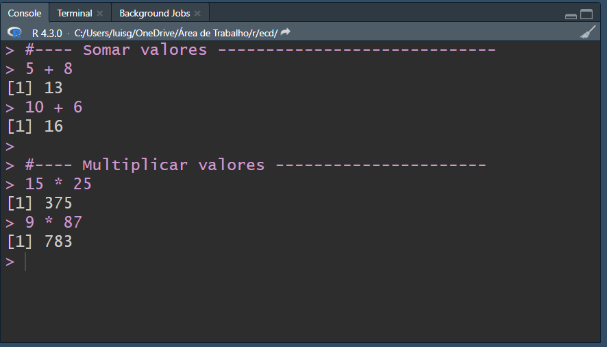

1 Introdução
Status 🟨🟨🟨
Este capítulo tem como objetivo fornecer uma visão inicial mínima para que o usuário possa dar os primeiros passos na linguagem.
1.1 Console do R
A tela inicial do R em si é um console, onde são passados comandos e seu interpratador os executa e, se for o caso, exibe saídas. O cursor fica posicionado ao lado do símbolo do prompt do R, >. Este símbolo indica que o sistema está pronto para receber novo comando.
1.1.1 Executando Comandos
A tela inicial fornece algumas sugestões para consulta a dados sobre R, como licença da linguagem, citação, ajudas, etc. Usaremos como exemplo inicial o comando license(). Após a digitação do comando devemos confirmar com ENTER para que o R execute o comando informado e exiba na tela o resultado, no caso a licença da própria linguagem. Após a execução um novo sinal do prompt é exibido em aguardo de um possível próximo comando.

Podemos digitar q(), por exemplo, que é a função que efetua o encerramento do R.

Agora considere um cenário diferente, onde executamos o comando license() seguido do comando citation() (que mostra como deve ser feita a citação da Linguagem R). Conforme os comandos forem sendo passados, o console vai sendo preenchido com estes comandos e suas respectivas saídas. A medida que a tela vai ficando “cheia” os dados exibidos no topo vão “sumindo” para dar lugar aos mais recentes, na parte inferior.

Buscando Comandos Anteriores
Para buscar comandos executados anteriormente, pode-se usar a seta para cima do teclado. Os comandos vão sendo apresentados do mais recente ao mais antigo.
1.1.2 Erros
Sempre que ocorrer algum erro na execução de um comando será exibida no console uma mensagem com o termo Error. Muitas vezes a mensagem de erro auxilia na identificação da causa do erro reportado. Abaixo um exemplo com erro retornado pelo R após a tentativa de execução de uma função inexistente (erro na digitação do comando).
citatin()Error in citatin(): não foi possível encontrar a função "citatin"1.2 Objetos
R opera sobre entidades que são conhecidas como objetos (R Core Team 2023a, cap 3). Existem diversos tipos de objetos em R como listas, matrizes, bases de dados, séries temporais, gráficos, modelos, etc. Neste capítulo inicial serão utilizados os vetores, pois são as estruturas mais básicas. As operações anteriores, por exemplo, de soma e multiplicação, foram feitas sobre números, que em R são vetores.
Variáveis
Muitas vezes objetos em R são chamados de variáveis, no sentido de que variáveis armazenam dados. Isto ocorre principalmente para objetos que armazenam um único valor, como um único número ou texto.
1.2.1 Vetores (Atômicos)
Vetores são entidades que armazenam dados em posições (R Core Team 2023b, cap 2). Os vetores são ditos atômicos, pois seus dados são todos do mesmo tipo. Você pode pensar em um vetor como uma “local” onde serão armazenados dados. Os vetores podem ser de um dos 6 tipos abaixo:
| Tipo | Descrição | Exemplo |
|---|---|---|
| logical | valor lógico | TRUE, FALSE |
| integer | número inteiro | 1 |
| double | número com ponto flutuante (real) | 1.5 |
| complex | número complexo | 1i |
| character | texto (strings) | ‘R é software livre.’ |
| raw | bytes |
1.3 Criação de Objetos
Para criação de objetos no R são usados os operadores de atribuição, <- e =. O operador mais usado é o <-. Assim para criação de um objeto do tipo vetor, pode ser usado o código abaixo, onde o objeto1 receberá o valor 10.
objeto1 <- 10Para criação de variáveis do tipo texto, devem ser usadas aspas, simples ou duplas. Aqui o objeto2 foi criado com uso de aspas ao início e ao final de texto para que o R trate o valor como character. Caso Não sejam colocadas as aspas, o R entenderá que texto é o nome de um objeto.
objeto2 = 'texto' Você pode ver o conteúdo de um objeto informando seu nome no console seguido de ENTER.
objeto1[1] 10objeto2[1] "texto"1.4 Operações com Objetos
Objetos podem ser atualizados/alterados, novamente, com o operador <-. No exemplo abaixo vamos criar um vetor de nome objeto3 com o operador :, que cria sequências de valores. Na sequência o objeto3 será atualizado recebendo seu próprio conteúdo acrescido do valor 10.
objeto3 <- 1:5
objeto3[1] 1 2 3 4 5objeto3 <- objeto3 + 10
objeto3[1] 11 12 13 14 15O vetor objeto3 foi criado com 5 posições, armazenando os valores de 1 a 5. Podemos acessar, por exemplo a terceira posição do vetor, através do operador de extração [ em combinação com o índice do vetor. Abaixo operação apra retornar o valor da posição 4 do objeto3.
objeto3[4] [1] 14Podemos também operar sobre este valor, por exemplo, adicionando 10 ao valor da quarta posicao do objeto3.
objeto3[4] + 10[1] 24Note que sem o operador de atribuição o valor da posição 4 do objeto3 não é atualizada, apenas exibida no console. Para atualizar seu valor usamos:
objeto3[1] 11 12 13 14 15objeto3[4] <- objeto3[4] + 10
objeto3[1] 11 12 13 24 151.4.1 Coerção
Quando vetores recebem dados de um tipo diferente o R tenta fazer uma operação de coerção, transformando os valores a fim de “atender” a todos. Nem sempre esta operação é possível e ela muitas vezes altera o vetor original. No exemplo abaixo o valor da posição 1 do vetor será atualizado para receber a letra A. Como o vetor originalmente era do tipo integer, o R fará a conversão dos valores para tipo character. Desta forma operações matemáticas não serão mais possíveis sobre este vetor.
objeto3[1] <- 'A'
objeto3[1] "A" "12" "13" "24" "15"objeto3 + 10Error in objeto3 + 10: argumento não-numérico para operador binário1.5 Usando Funções
O coração da linguagém R são suas funções. Através delas são feitas as mais diversas operações sobre os objetos. Basicamente funções devem ser usadas através de seus nomes e com os argumentos dentro de parênteses: funcao(argumento1, argumento2, …).
Por exemplo, a função typeof exige a informação de um argumento (um objeto do R). O R processa esta função e devolve seu retorno, no caso qual o tipo do objeto1.
typeof(objeto1)[1] "double"A função is.vector, por sua vez, testa se um objeto é um vetor e retorna um valor lógico como resposta do teste, TRUE ou FALSE.
is.vector(5)[1] TRUEO valor armazenado em um objeto pode ser visualizado com a função print.
print(objeto1)[1] 101.5.1 Argumentos de Funções
As funções em R podem ter diversos argumentos e muitas vezes estes argumentos possuem valores definidos por padrão. Assim caso o usuário não informe nenhum valor para os argumentos da função esta usará os valores previamente definidos em seu código.
Importante notar que os argumento possuem nomes e estes nomes podem ser omitidos na chamada da função. Voltemos a função typeof, ela possui apenas um argumento de nome x. Inserindo o argumento na função de forma explícita se obtém mesmo resultado anterior.
typeof(x = objeto1)[1] "double"Nos casos de omissão do nome dos argumentos, estes receberão os valores informados de acordo com a ordem presente no código. Por exemplo a função rep.int retorna os valores indicados no argumento x n (argumento times) vezes.
rep.int(5, 4)[1] 5 5 5 5rep.int(x = 5, times = 4)[1] 5 5 5 5Perceba que os argumentos podem ser informados em ordem diversa, entretanto devem ser atribuidos de forma explícita. Veja que rep.int(times = 4, x = 5) é diferente de rep.int(4, 5).
rep.int(times = 4, x = 5)[1] 5 5 5 5rep.int(4, 5)[1] 4 4 4 4 4
Nota
Algumas funções não possuem argumentos e “apenas” executam seu código, não exigindo interação de entrada por parte do usuário, como por exemplo as funções Sys.Date() e Sys.time(), que retornam a data e data e hora respectivamente.
1.5.2 Armazenando Retorno
Até aqui as funções foram usadas de forma que seus retornos foram apenas exibidos no console. Para que o valor retornado por uma função seja armazenado em um objeto se faz o uso do operador de atribuição.
tipo_objeto1 <- typeof(objeto1)
print(tipo_objeto1)[1] "double"Agora o objeto tipo_objeto1 armazena o valor “double” que foi retornado pelo função typeof. Veja que a função is.double que testa se o objeto é double retorna FALSE, pois o objeto tipo_objeto1 recebeu um valor em formato texto. Dentro deste texto está contida a palavra double, mas isto não significa que o tipo do vetor tipo_objeto1 passou a ser double. Cuidado para não confundir o tipo do objeto com seu conteúdo.
is.double(tipo_objeto1)[1] FALSEtypeof(tipo_objeto1)[1] "character"is.character(tipo_objeto1)[1] TRUE1.6 Exibindo Objetos
O R possui a função ls que exibe os objetos existentes no ambiente. Veja que a função ls possui valores padrão em seus argumentos, assim ela pode ser processada apenas com a digitação do código ls(). Mais detalhes em Funções.
ls()[1] "objeto1" "objeto2" "objeto3" "tipo_objeto1"1.7 Remoção de Objetos
Objetos podem ser removidos (excluídos) com a função rm.
rm(objeto2)
ls()[1] "objeto1" "objeto3" "tipo_objeto1"1.8 Iniciando o R…Studio
R é uma linguagem de programação e não está focada em oferecer uma interface sofisticada de interação com o usuário. Este papel fica por conta de outras ferramentas, como o RStudio, o IDE mais usado para a linguagem. Na prática “ninguém” usa o R puro para desenvolver seus projetos.
Desta forma usaremos o RStudio como ferramenta de desenvolvimento, pois ela irá nos fornecer muitas funcionalidades como preenchimento de código (code completion), janelas para instalar pacotes, janelas com arquivos de scripts, navegação por pastas, visualização e exportação de gráfico e claro comunicação direta com o R.
Ao longo deste livro serão usadas diversas funcionalidades do RStudio. Porém o foco será sempre no conteúdo, pois o detalhamento das principais funcionalidades do RStudio é tratada em seção específica.

Neste capítulo focaremos no painel Console, que “abriga” o R e no Source, que permite utilização de scripts.


1.9 Trabalhando com Scripts
Scripts são arquivos de texto que recebem códigos e conforme desejo do usuário são enviados ao console para execução. Na prática usar o console diretamente é útil para pequenas operações. No Rstudio você pode criar um script em File > New File > R Script. O arquivo de script será aberto no painel Source.

Para executar comandos de um arquivo de script você pode usar atalhos de teclado (Ctrl + Enter) ou através do botão Run no topo superior direito da aba Source. Ambas opções executam ou a linha corrente ou a parte do texto selecionada.



1.9.1 Comentários
R aceita comentários em seu código através do caractere sustenido (hashtag), ’#’. Comentários são muito importantes para facilitar a leitura do código posteriormente. Uma forma interessante de organizar o seu código é criar uma linha de comentário para separação de etapas de processamento. Perceba que as linhas de comentários foram passadas para o console e este não emitiu nenhuma mensagem, tampouco efetuou qualquer operação.
Porquê…
Em operações mais complexas procure colocar comentários que expliquem os motivos de se executar alguma operação e não o que o código está fazendo. Foque no ‘porquê’ de cada operação e não no ‘o que’.
Última atualização: 19/08/2023 - 22:48:55